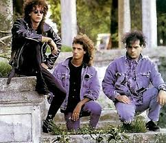
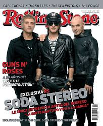
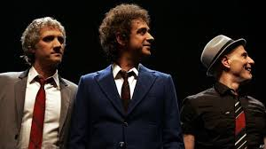
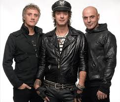

Soda Stereo. Historia de una banda epica.
Soda Stereo nació en 1982 como un grupo heredero directo del new wave, impulsado por bandas como The Police y Television. En sus comienzos combinaba la energía del punk-rock con las melodías del reggae y el ska, aunque su música se fue tornando cada vez más pop con el correr de los discos.




Reunion y gira historica.
En 2007, al cumplirse 10 años de su separación, la banda decidió reunirse por una vez con el fin de realizar una gran gira continental. El 6 de junio de 2007 se conoció la noticia y el 9 se oficializó: Soda Stereo volvería a los escenarios mediante una única gira americana llamada "Me verás volver" (frase emblemática del grupo tomada de "En la ciudad de la furia").